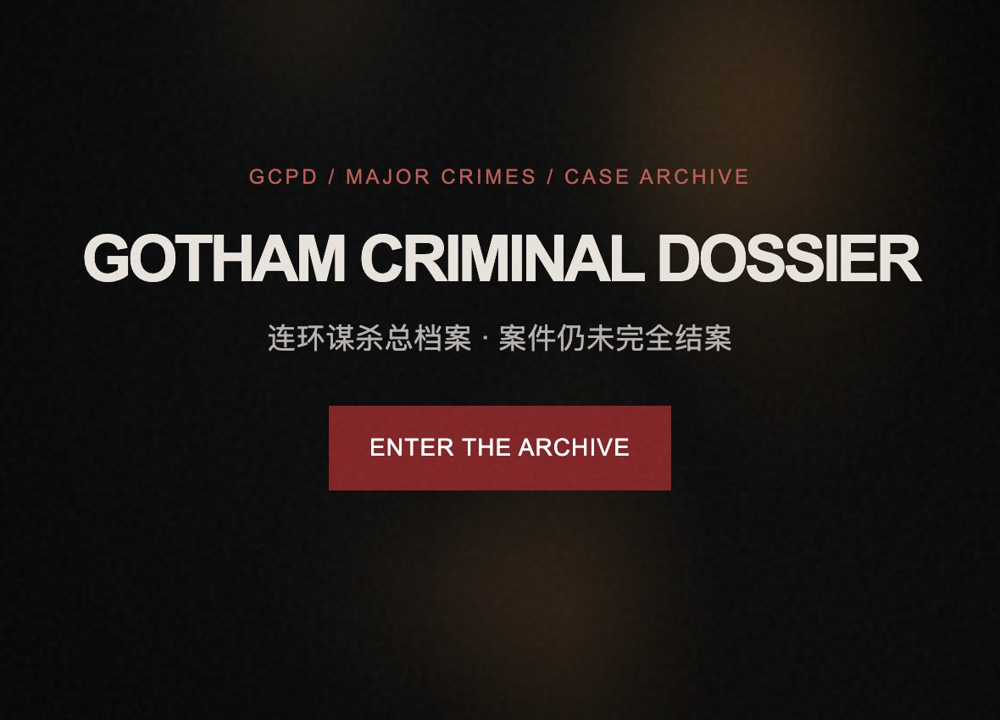

AI 的产品可能
探索模型能力与真实场景之间的连接，把技术变成有用的体验。
对技术保持好奇，对体验认真一点。
在 AI 与人的交汇处，把想法变成可以触摸的可能。
姓名：刘潇然
性别：男
出生地：重庆
出生日期：1998.07.30
身份：「重庆红楼蓝箭酒店管理有限公司」业主代表兼法人代表
职业：AI产品经理
创作理念：As we can
从理解问题，到做出一个可以试试看的答案。
探索模型能力与真实场景之间的连接，把技术变成有用的体验。
理解使用者的目标与习惯，让复杂的能力，以简单的方式被使用。
通过原型验证直觉，在尝试和反馈中，找到值得继续的下一步。
交互叙事与网页实践。
从一份档案，进入哥谭的故事。

连环谋杀总档案 · 案件仍未完全结案
进入哥谭的案件档案，在受害者与嫌疑人记录、调查时间线、谜语卡片和物证之间追踪线索，探索加密档案背后的故事。
进入档案 ↗一些关于我、这个网站，
以及下一次连接的小事。
我是一名 AI 产品经理，关注 AI 产品、用户体验，以及把想法变成实际体验的过程。
这里会记录我的产品思考、探索过程和作品。你可以在作品区域体验「GOTHAM CRIMINAL DOSSIER」。
你可以先访问我的 GitHub 主页 ↗。也可以在本站作品区域体验「GOTHAM CRIMINAL DOSSIER」。
目前可以通过 GitHub 主页 ↗ 找到我。其他联系方式会在提供后补充。
关于 AI、产品，或一个有趣的新可能。
在 GitHub 找到我 ↗